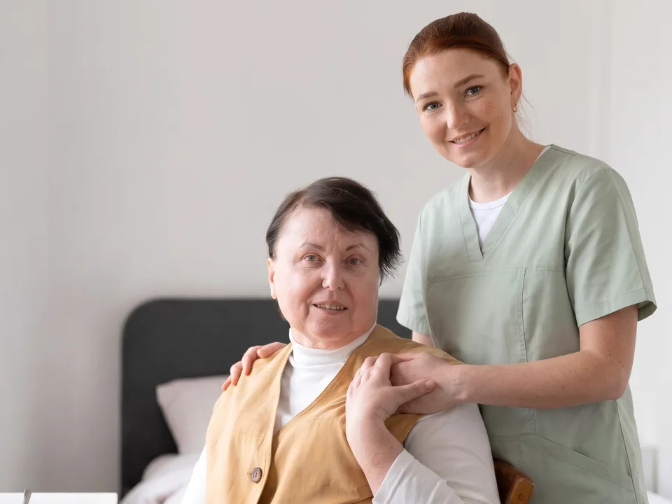
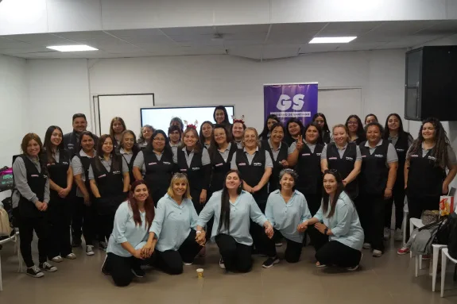
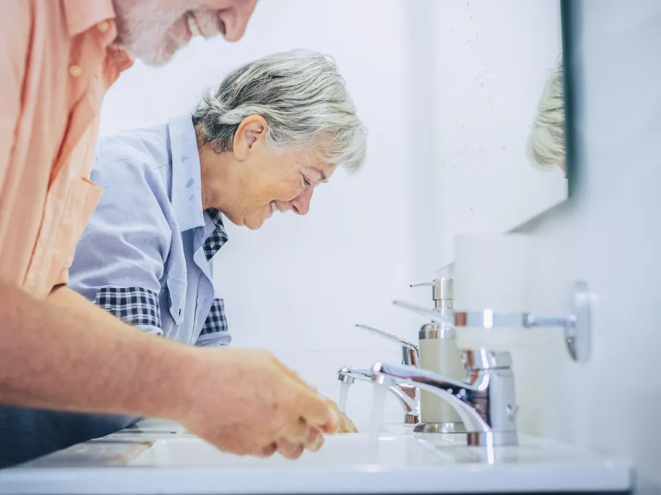
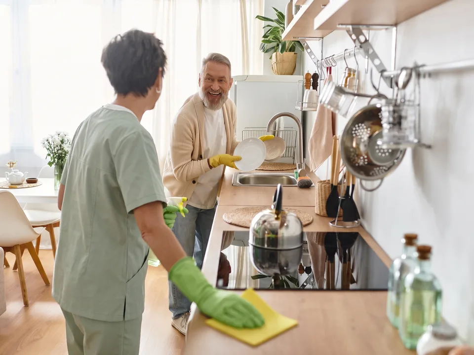
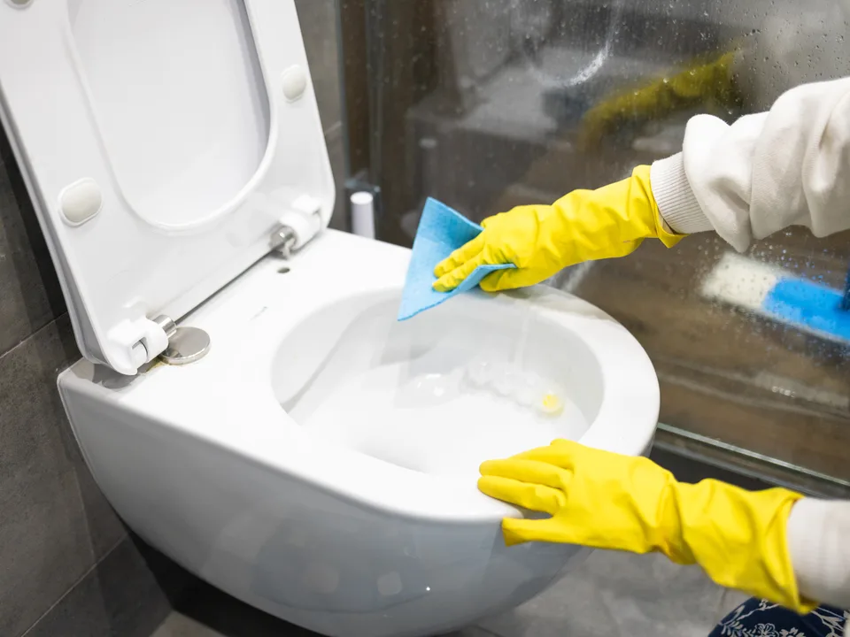

Cuidado y compañía:
Acompañamiento cercano y apoyo personal diario, respetando la historia, rutinas y autonomía de cada persona en su hogar.

Ecobless acompaña a las familias en Chile con servicios de cuidado de personas, de aseo y mantención del hogar.
HablemosEcobless acompaña a las familias en Chile

Nacimos con el deseo de acompañar a las familias en su día a día, entregando apoyo, confianza y tranquilidad en el cuidado del hogar y de sus seres queridos. Sabemos que entre el trabajo y las responsabilidades diarias, no es fácil. Por eso queremos hacer la vida un poco más sencilla, ofreciendo un servicio cercano, profesional y sobre todo humano.
A lo largo de nuestra experiencia, hemos tenido la oportunidad de ser parte de iniciativas que reflejan lo que nos mueve. Una de ellas fue el programa “Cuidando a quienes Cuidan”, desarrollado junto al Gobierno de Santiago, donde apoyamos a personas cuidadoras de la Región Metropolitana con servicios de limpieza doméstica, ayudándolas a aliviar sus tareas diarias y dedicar más tiempo a lo que realmente importa.

Nuestros servicios

Acompañamiento cercano y apoyo personal diario, respetando la historia, rutinas y autonomía de cada persona en su hogar.

Asistencia respetuosa en el aseo diario, vestimenta y confort físico para proteger su dignidad y comodidad.
Supervisión y apoyo riguroso en el cumplimiento de horarios y administración segura de tratamientos indicados.
Acompañamiento en caminatas, movilidad asistida y ejercicios suaves adaptados al ritmo de cada persona.
Ejercicios cotidianos, lectura, conversación y dinámicas pensadas para mantener la mente activa y conectada.
Presencia atenta y prevención de riesgos en el domicilio para resguardar un entorno seguro y tranquilo.
Entrega de un informe detallado al cierre de cada jornada para que la familia sepa siempre cómo estuvo su ser querido.

Limpieza profunda y regular de los espacios del hogar, respaldada por más de dos años de experiencia entregando ambientes limpios, ordenados y cómodos.

Cuidado especial en la limpieza de cocinas, baños y habitaciones para asegurar un entorno saludable para toda la familia.

Posibilidad de combinar el cuidado de personas con jornadas programadas de aseo y mantención del hogar según las necesidades de cada familia.
Cómo trabajamos
Visita y evaluación inicial.
Asignamos el perfil asistencial según cada necesidad.
Cuidados, apoyo en el hogar y estimulación a la medida.
Atención diaria en el hogar.
Reporte y supervisión continua con la familia.
Coordinamos el cuidado de la persona, el aseo y la mantención del hogar, y acompañamos a la familia desde la evaluación inicial hasta el seguimiento diario.
Cuéntanos tu caso“Este es un testimonio de una persona que contrató el servicio”
Comentario de cliente
Comentario de cliente
Preguntas frecuentes
La frecuencia se define después de la visita y evaluación inicial, de acuerdo con las necesidades de cada familia y el plan de cuidado acordado.
Puede incluir asistencia en la vida diaria, compañía, higiene, control de medicación, prevención de riesgos y rutinas de estimulación cognitiva y motriz.
Ecobless asigna el perfil asistencial según las necesidades de cada caso y trabaja con un equipo capacitado, acompañado y sujeto a supervisión continua.
Comenzamos con una visita y evaluación inicial para conocer la historia, las rutinas, las preferencias y los apoyos que necesita cada persona.
¿Por qué Ecobless?
Nos interesamos por la historia y las preferencias de cada persona, y respetamos sus rutinas y decisiones.
Siempre sabes qué pasó en la jornada, enviamos a la familia un reporte diario de cada visita.
Cumplimos horarios y protocolos de seguridad en cada visita, con supervisión continua.
Cuidar es nuestro trabajo y lo hacemos con sentido, con un equipo capacitado y acompañado.